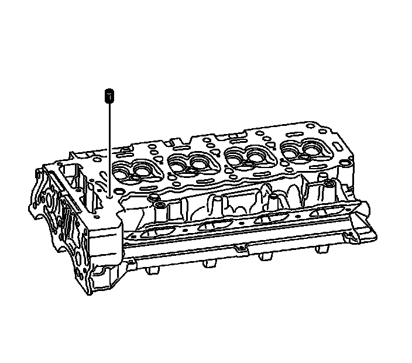
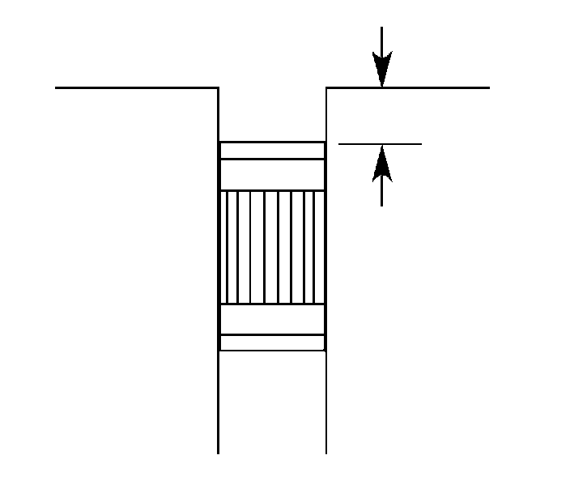
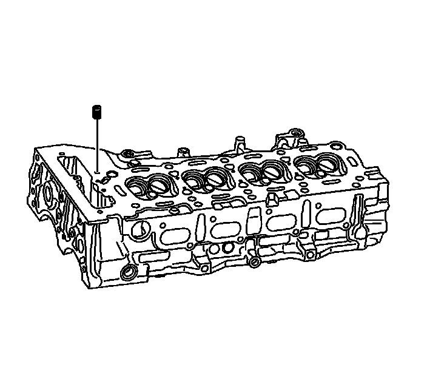
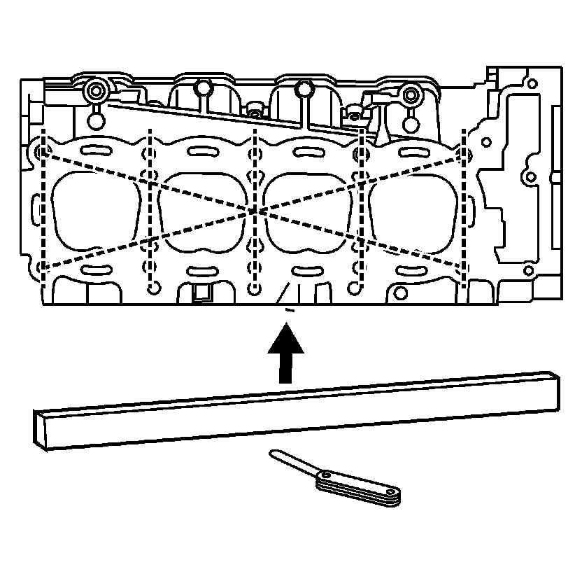
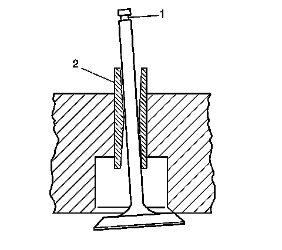

57. Cylinder Head Cleaning and Inspection
Cylinder Head Cleaning and Inspection
Tools Required
* J 8001 Dial Indicator Set
* J 8358 Carbon Removal Brush
* J 28410 Gasket Remover
Visual Inspection Procedure
1. Inspect the cylinder head for the following:
* Cracks, damage or pitting in the combustion chambers.
Important: DO NOT machine the camshaft bearing journals.
* Scoring of the camshaft bearings and/or the journals. If the camshaft bearing journals appear to be scored or damaged, you must replace the cylinder head.
* Debris in the oil galleries. Continue to clean the galleries until all debris is removed.
* Coolant leaks or damage to the deck face sealing surface. If coolant leaks are present, measure the surface warpage as described under Cylinder Head Measurement.
* Damage to any gasket surfaces
* Damage to any threaded bolt holes
* Burnt or eroded areas in the combustion chamber
* Cracks in the exhaust ports and combustion chambers
* External cracks in the water chamber
* Restrictions in the intake or exhaust passages
* Restrictions in the cooling system passages
* Rusted, damaged, or leaking core plugs
2. If the cylinder head is cracked or damaged, it must be replaced. No welding or patching of the cylinder head is recommended.

3. The oil passage from the left cylinder head deck face that feeds the stationary hydraulic lifters (SHLAs) and the camshafts has a pressed-in restrictor. The orifice within the restrictor is 3 mm (0.1181 in). DO NOT remove the restrictor. Ensure the restrictor and oil passage are clean and free of any debris.

4. Ensure the left cylinder head oil gallery restictor is installed to the proper depth of 1.5-5.5 mm (0.059-0.216 in).

5. The oil passage from the right cylinder head deck face that feeds the stationary hydraulic lifters (SHLAs) and the camshafts has a pressed-in restrictor. The orifice within the restrictor is 3 mm (0.1181 in). DO NOT remove the restrictor. Ensure the restrictor and oil passage are clean and free of any debris.
6. Ensure the right cylinder head oil gallery restictor is installed to the proper depth of 1.5-5.5 mm (0.059-0.216 in).
Cleaning Procedure
1. Clean all cylinder head surfaces with non-corrosive solvent.
Caution: Refer to Safety Glasses Caution (Safety Glasses Warning) .
2. Blow out all the oil galleries using compressed air.
3. Remove any carbon deposits from the combustion chambers using the J 8358 .
4. Remove any gasket material with the J 28410 .
5. Clean any debris or build-up from the lifter pockets.
6. Inspect the cylinder head again for the items noted under Visual Inspection.
Cylinder Head Measurement
Notice: Refer to Fastener Notice (Fastener Notice) .
1. Measure the camshaft clearance specification using the following procedure:
1. Install the camshaft caps.
2. Install the camshaft caps bolts.
Tighten the camshaft bearing caps bolts to 5 N.m (44 lb in).
3. Measure the camshaft bearings using an inside micrometer.
4. Inspect and measure the camshaft journal diameters. Refer to Camshaft Cleaning and Inspection.
5. Subtract the camshaft journal diameter from the camshaft bearing diameter in order to obtain the running clearance.
6. If the running clearance exceeds the specifications and the camshaft journals are within specification, replace the cylinder head. Refer to Engine Mechanical Specifications (Specifications) .
2. Measure the camshaft thrust specification using the following procedure:
1. Inspect each camshaft cap thrust surface for excessive scoring/wear.
2. Inspect each camshaft. Refer to Camshaft Cleaning and Inspection.
3. Install the intake and exhaust camshafts in the cylinder head.
4. Install the camshaft caps.
5. Install the camshaft caps bolts.
Tighten the camshaft bearing caps bolts to 5 N.m (44 lb in).
6. Measure the camshaft thrust bearing clearance at the front camshaft bearing cap. Refer to Engine Mechanical Specifications (Specifications) .
7. If the camshaft thrust bearing clearance is not to specification repair or replace the cylinder head.

3. Measure the cylinder head flatness using the following procedure:
1. Clean any remaining head gasket material from the cylinder head face.
2. Place a straight-edge diagonally across the cylinder head face surface.
3. Measure the clearance between the straight-edge and the cylinder head using a feeler gage at four points along the straight-edge.
* If warpage is less than 0.05 mm (0.002 in), the cylinder head surface does not require resurfacing.
* If warpage is between 0.05-0.20 mm (0.002-0.008 in), the cylinder head must be resurfaced.
Valve Guide Measurement Procedure

1. Measure the valve stem (1)-to-guide (2) clearance as follows:
* Excessive valve stem-to-guide clearance may cause an excessive oil consumption and may also case a valve to break. Insufficient clearance will result in noisy and sticky functioning of the valve and will disturb the engine assembly smoothness.
* Clamp the J 8001 to the cylinder head at the camshaft cover rail.
* Locate the dial indicator so that the movement of the valve stem from side to side, crossways to the cylinder head, will cause a direct movement of the indicator stem.
The dial indicator stem must contact the side of the valve stem just above the valve guide.
* Drop the valve head about 1.6 mm (0.0064 in) off the valve seat.
* Use light pressure when moving the valve stem from side to side in order to obtain a clearance reading.
2. If the clearance for the intake valve is greater than 0.11 mm (0.0045 in) and a new standard diameter valve stem will not bring the clearance within specifications, the cylinder head must be replaced.
3. If the clearance for the exhaust valve is greater than 0.12 mm (0.005 in) and a new standard diameter valve stem will not bring the clearance within specifications, the cylinder head must be replaced.
4. Valve guide wear at the bottom 10 mm (0.39 in) of the valve guide is not significant to normal operation.